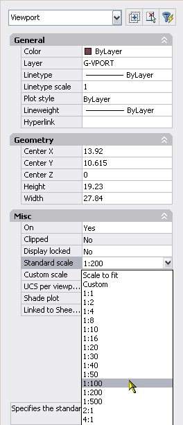
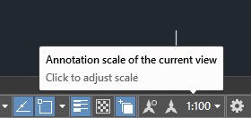

Avere degli standard semplifica la produzione: non ricominciate a scegliere i colori delle penne e il font ad ogni progetto! Salvate le impostazioni preferite in un file, rinominatelo *.dwt (drawing template) e partite da quello ad ogni disegno. E se non questo almeno partite da acadiso.dwt e mai da acad.dwt: il primo ha impostazioni metriche e il secondo imperiali.
Si farà normalmente riferimento a Norme UNI/CEI, mentre per i layer e i nomi dei file si è preferita l'impostazione pi๠mnemonica della AEC (UK).
Le indicazioni relative alla stampa sono fornite considerando di stampare dai layout (spazio carta).
si tratta di due serie alternate che raddoppiano (o una che incrementa di √2) - Questo consente di lavorare su riproduzioni raddoppiate/dimezzate con penne omogenee.
da usare così:
tipo linea/spessore
id
descr.
utilizzo
1:1
1:5/1:10
1:50
1:100
1:200
A
continua grossa
sagome sezioni e spigoli in vista
1,40
1,00
0,70
0,50
0,35
a
continua media
sagome sezioni e spigoli in vista
0,70
0,50
0,35
0,25
0,18
B
continua fine
linee quote, tratteggi sezioni, ribaltamenti, spigoli fittizi in vista,assi di simmetria
0,50
0,35
0,25
0,18
0,18
D
cont. fine zigzag
limiti di viste e sezioni non assi di simmetria
0,50
0,35
0,25
0,18
0,18
E
tratti grossa
contorni e spigoli reali nascosti
0,70
0,50
0,35
0,25
0,18
F
tratti fine
"
0,50
0,35
0,25
0,18
0,18
H
mista fine e grossa
tracce di piani sezione (grossa estremità e variazioni di giacitura)
1,4/,7
1/,5
,7/,35
,5/,25
,35/,18
J
mista grossa
indicazioni di superfici o zone particolari
0,70
0,50
0,35
0,25
0,18
K
fine due tratti corti uno lungo
contorni di riferimenti vicini, posizioni estreme parti mobili, assi neutri o baricentrici, parti situate anteriormente al piano sezione, contorni parti eliminate
0,50
0,35
0,25
0,18
0,18
E o F in alternativa, non entrambi nello stesso disegno.
Gli abbinamenti consigliati sono:
2 spessori
3 spessori
0,18-,035
0,18-0,25-0,50
0,25-0,50
0,25-0,35-0,70
0,35-0,70
0,35-0,50-1,00
0,50-1,40
0,50-0,70-1,40
0,70-2,00
0,70-1,00-2,00
non impazzite a calibrare penne con spessori che differiscono di micron: comunque stampanti e plotter diversi tradiranno i vostri intenti artistici.
Spessore Delle Linee: Plottaggio (ctb/stb)
Il suggerimento ISO è il seguente:
Penna nr.
Colore
Spessore Penna
1
ROSSO
0.35 mm
2
GIALLO
0.7 mm
3
VERDE
0.25 mm
4
CIANO
0.5 mm
5
BLU
0.25 mm
6
MAGENTA
0.5 mm
7
BIANCO
0.35 mm
8
GRIGIO chiaro
0.13 mm
9
GRIGIO scuro
0.13 mm
10
OCRA
1 mm
i colori corrispondono a quelli dei Rapidograph
personalmente uso i 255 colori di base tutti neri (eccetto 250-255 che per antica abitudine lascio dei rispettivi grigi) e per ottenere dei colori scelgo specificamente il sistema TrueColor.
STB
sfruttando le recenti versioni di AutoCad ci si puó affrancare dalla corrispondenza colore=spessore:
Il file di stile di stampa STB puo' definire stili arbitrari, nominali, di plottaggio, da assegnare ai layer o ai singoli oggetti.
Nel nostro caso sono stati implementati una serie di file stb diversi per diverse scale che definiscono i seguenti stili, opportunamente assegnati ai layer:
nome
finissimo
1:20
1:50
1:100
1:200
1:500
note:
black 0
0.00
0.00
0.00
0.00
0.00
0.00
colore nero,diversi spessori ISO,a prescindere dal colore degli oggetti
black XXS
0.00
0.25
0.18
0.09.
0.05
0.00
black XS
0.00
0.35
0.25
0.18
0.09
0.05
black S
0.00
0.5
0.35
0.25
0.18
0.09
black M
0.00
0.7
0.5
0.35
0.25
0.18
black L
0.00
1.0
0.7
0.5
0.25
0.18
black XL
0.00
1.4
1.0
0.7
0.5
0.35
black XXL
0.00
2.0
1.4
1.0
0.7
0.5
black ByObj
ByObject
nero,spessore dell'oggetto o layer (ad es. per quotature,hatch)
color L (M/S)
cfr. Black
colore del layer/oggetto,diversi spessori ISO.
gray 10% (20%,30%…)
ByObject
Diverse intensità di grigio,spessore da layer/oggetto,a prescindere dal colore originale
white
ByObject
Bianco (coprente)
Questa impostazione consente,assegnando gli stili di stampa ai layer (ad esempio sezioni muri:Black XL ):
di scegliere i colori a schermo di proprio gradimento;
assegnare spessori relativi ai layer/oggetti,facilmente scalabili cambiando stb;
aggiungere facilmente stili arbitrari (è controllabile anche l'intensità del pigmento vedi i Gray)
usare oggetti colorati diversamente su unico layer (es:X-COLR) assegnando semplicemente i colori desiderati agli oggetti;
il white consente cancellazioni,testi bianchi su hatch colorati
Se ricevete file da fuori, da usare come basi XREF ad esempio, è piuttosto facile calibrarne i layer (conoscendone il ctb, si ordinano per colore e gli si assegna il corretto plotstyle). Non è facile il contrario: se si usa lo stesso colore in layer da diversi plotstyle, convertirlo in ctb è impossibile. Per cui il consiglio è comunque mantenere un criterio di colori anche quando si adottano gli stb.
Sono utilizzabili, secondo le UNI 7559 - ISO 3098, le seguenti altezze,
espresse in millimetri :
2,5 - 3,5 - 5 - 7 - 10
Se si scrive nello spazio modello andranno pertanto scalati in funzione dell'output di stampa, ad esempio per unità di disegno in cm:
H
2:1
1:1
1:2
1:5
1:10
1:20
1:25
1:50
1:100
1:200
1:250
1:500
1:1000
25mm
0.125
0.25
0.5
1.25
2.5
5
6.25
12.5
25
50
62.5
125
250
35mm
0.175
0.35
0.7
1.75
3.5
7
8.75
17.5
35
70
87.5
175
350
50mm
0.2
0.5
1
2
5
10
12.5
25
50
100
125
250
500
70mm
0.35
0.7
1.4
3.5
7
14
17.5
35
70
140
175
280
700
sarebbero poi da plottare a 1/10 di spessore (25mm=2.5mm ovvero \"blackXS\" nel stb al 100)). Questo naturalmente ha senso se si usano i font "disegnati" *.shx, usando i normali truetype o altri font di sistema non c'è bisogno perché quelli hanno già il proprio spessore.
consiglio vivamente di preferire i font i truetype agli shp, anche perché nei pdf i primi rimarranno testi mentre i secondi disegni.
se il disegno deve circolare tra colleghi non state a caricare font bizzarri, meglio attenersi a quelli che si trovano di default su ogni computer. Quello è un lusso che potrete permettervi se gestite l'intero processo produttivo nel vostro studio.
I blocchi semplici (di un solo layer) vanno creati sul layer 0 con tutte le caratteristiche (colore, tipolinea, linewight, plotstyle...) settate a byblock, e poi inseriti nel layer opportuno (es. simboli elettrici nel layer E-ELEC, sanitari in A_SANI) questo semplifica l'accensione/spegnimento dei layer.
La proprietà BYBLOCK significa che alla singola istanza si possono poi dare caratteristiche diverse che non quelle del layer in cui sono inseriti, ad esempio a un wc si potrebbe forzare lo stile linea tratteggio diversamente dalla proprietà del layer.
I blocchi più' complessi, che richiedono più layer (es. la camera di un albergo) viceversa vanno creati con i diversi elementi nei layer opportuni e poi inseriti nel layer 0, o uno specificamente creato, non un layer qalunque tipo MURI.
Da qualche tempo sono a disposizione quote, testi, blocchi e hatch annotativi. Sono tutti elementi che scalano in base al valore della scala della viewport. Questo semplifica enormemente la produzione di tavole che prevedono diverse scale da uno stesso file. Si possono avere viewport sullo statto layout ma di diversa scala di visualizzazione che facilmente hanno la stessa grafica (seguirà una nota sulla scala dei tratteggi). Potete vedere di seguito la proprietà scala di una viewport (bizzarramente ci viene concesso di usare una scala di visualizzazione e una divesra per le annotazioni)

La stessa informazione è nella taskbar - quando si lavora nel model space da qui potete rapidamente scegliere la scala delle quote, blocchi e testi annotativi che inserirete o visualizzerete.

il simbolo di annotativo rappresenta la sezione di uno scalimetro
L'argomento è complesso, ha le sue complicazioni e richiede un po' di pratica per essere ottimizzato, ma sicuramente conviene rispetto all'inserire molteplici testi e quote in diversi layer.
se scompaiono testi o dimensioni, nonstante tutti i layer siano accesi, probabilmente state vedendo il disegno a una scala per la quale i suddetti elementi annotativi non sono stati predisposti. "accendendo" il pulsante con il cerchietto, quello a sinistra dei due annotativi nella taskbar, si rendono visibili tutti gli oggetti annotativoi, anche quelli spenti alla scala corrente.
Per maggiori approfondimenti cercate annotative nella guida o online.
Stili quota non annotativi
Se non voleste utilizzare la comodità e complessità delle quote annotative, nel preparare gli stili di quota statici da utilizzare a diverse scale, il mio consiglio è di prepararne una che vi piaccia ad una data scala, e poi duplicarla semplicemente scalandola interamente, senza dover scalare tutte e ogni proprietà, con l'impostazione use overall scale of
0 è uno dei layer di default, fondamentale. non spegnerlo mai in stampa.
*plotstyle è presente solo se il file è basato su stb invece di ctb (il file nasce in un modo o nell'altro, ma può essere convertito fra le due modalità).